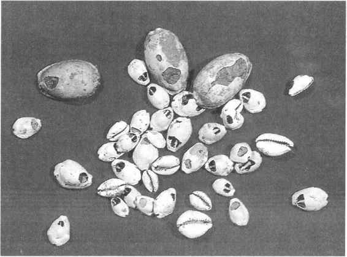

第二节
贝 币
贝壳在中国古代是深受人们喜爱的装饰品，由于它圆润而有美丽的花纹和光泽，且数量相对稀少，就成为大家都想获得的价值极高的一般等价物，由此人们往往把最美好的东西称做宝贝。从古代文字结构看，凡是同货币、价值有关的字，大都从贝，如赏赐、宝货、贫贱等等。可见，中国文字形成的时候，贝就已经是起货币作用的价值尺度了。
据考证，贝在夏代就已成为原始形态的货币了。在河南偃师夏代二里头文化遗址的发掘中，除发现了人们作为货币使用的天然贝外，还有经过加工制作的骨贝和石贝。［7］二里头文化的断代，介于龙山文化［8］和郑州二里冈商代前期文化之间，应该是夏代晚期的遗址，因此这一发现可以说明夏末商初时期贝币的使用已相当广泛了。骨贝、石贝等人工制造的仿制贝的出现，表明当时贝币的需求量很大，天然的真贝数量已不敷应用，才以仿制贝来代替真贝。可以认为，这一时期贝的功能，应为兼有装饰品和货币的两种作用。
进入公元前1600年商代后，从出土文物和古籍记载看，贝币的使用已很普遍了。记载中使用贝币的数量也愈来愈大，从“二贝”、“五贝”发展到几朋、几十朋。“朋”是古代成串贝币的计数单位。朋的出现，表明贝币的使用按枚计算已不敷应用了，而改用串来计算了，即它的流通使用数量已成倍地增加。如殷墟甲骨卜辞：“取贝”［9］；“其用旧贝一贝十朋”［10］。传世的殷彝铭文，也不乏关于贝币的记载。如：“王商（赏）戍嗣子贝廿朋。”［11］在已知的这些记载中，把贝用来作为赏赐品的情况比其他任何物品都多。货币职能已逐渐成为贝的主要作用。古籍《尚书·盘庚篇》记述了盘庚斥责他的臣僚们贪求贝玉的行为，告诫他们要“无总于货宝”。可见早在公元前一千三百余年时，贝就成为人们经常贪求的财宝了。贝所以能具有这样的品格，根本原因是它已成为社会公认的、代表一定价值并能换取多种物品的货币了，而不单纯是装饰品。河南安阳殷墟武丁配偶“妇好”墓，出土海贝有7000枚之多，［12］山东益都苏埠屯一号大墓出土贝3790枚，［13］其他商代中晚期墓葬中也多有出土数百枚贝的现象，这些表明贝的数量显示了货币财富的多少，贝是当时通行的主要货币。（图15—1）

图15-1 河南安阳殷墟及妇好墓出土的贝币
贝之所以能够成为古代最早的货币，一是由于它具有天然美丽的形态和色彩斑斓的花纹、光泽，同时又被古代先民看做是“生育之门”的象征，是美好和吉利的护符，所以人们都乐于互相赠与或珍藏。二是在商品交换过程中，它具有很多作为交换媒介物的优点，比如它能以枚为单位，便于计数；坚固耐磨，轻巧灵便，便于携带和授受；它的产量不多，得来不易，不致流通过滥。海贝有一百多个品种，被用作货币最普遍的是齿贝，它的长短大小在一寸左右，人们交换授受比较方便。此外，还有紫贝、玄贝、大贝等。大贝作为货币在商代已有记载，殷《戊辰彝铭》：“戊辰弜师锡鬯廿卣、贝”；《庚午父乙鼎铭》：“作册友史锡贝”，［14］据郭沫若考证，“贝”就是大贝。《尚书·大传》中也有“大贝百朋”的话。殷墟妇好墓出土实物中的一种大贝，比一般的海贝体积大得多，可能就是这种贝，它的价值应比一般的海贝要高。从甲骨文和金文中有的贝字写成、形状看，被当做货币的贝，可能还有类似河蚌的双壳贝。贝币发展到鼎盛时期，真贝的数量不足，仿制贝日渐增多。现在已知的仿制贝种类有：珧贝［15］、石贝、骨贝、角贝、陶贝以及各种金属贝，如铜贝、金贝、包金贝等。
贝币在流通中，最初以枚或个为计算单位。商末周初，随着手工业和商业的发展，货币的作用和流通范围扩大了，贝币的计算单位就逐渐改为“朋”。朋是用绳穿起来的贝币。根据朋字的写法“”、“”，以及其他史料的研究，一朋的数量大约是十个或二十个贝币。现在出土的贝币，有不少是有穿孔的，一孔的、二孔的、三孔的都有，这就是绳穿的遗迹。在商代以朋计数的尚少，进入西周后，各种文字中记载贝币数量时，以朋为单位就多起来了。如《诗经》：“既见君子，锡我百朋”。［16］西周青铜器也有“易贝十朋”、“易贝五十朋”等铭文，所记数额都在十朋以上。以朋计数的贝币的购买力有多大，现在已知的材料很少。西周初期的《遽伯睘彝铭》，记述铸造本器的费用为：“用贝十朋又朋”，意即铸造它花费了十四朋贝币。周共王三年的《卫盉铭》记载：“堇（瑾）章（璋）才八十朋，氒（厥）”；“赤虎（琥）两、麂 （韨）两、一，才廿朋”，［17］说明瑾璋（美玉制的礼器）值贝币八十朋，两件赤琥、两件麂韨（麂皮制的祭服蔽膝）、一件
（韨）两、一，才廿朋”，［17］说明瑾璋（美玉制的礼器）值贝币八十朋，两件赤琥、两件麂韨（麂皮制的祭服蔽膝）、一件
 （画有花纹的蔽膝），共值贝币十朋。可以认为，这就是当时的物价了。
（画有花纹的蔽膝），共值贝币十朋。可以认为，这就是当时的物价了。
西周中期，由于货币经济的进一步发展，金属贝币逐渐流行。从发掘的文物看，铜铸贝币早在殷商时代就已出现。河南、山西都曾出土过这种铜贝币［18］，这是世界上最早的金属铸币，比西方最早的小亚细亚的里底亚（Lydia）铸币，要早四五个世纪。大约在公元前九百多年周共王以后，铜贝币的使用就逐渐增多起来。（图15—2）现在已知的铜贝币，大体有两类：一是形体凸起，齿纹成曲线，比较像真贝；另一类形体扁平，齿纹成直线，使用较方便。铜贝币广泛流通使用以后，贝币的计算单位又改为“寽”。寽是古代金属重量单位名称，一寽合十一又二十五分之十三铢，即略小于半两（十二铢）。周穆王时的《稽卣铭》：“易贝卅寽”；周厉王时的《扬铭》：“取五寽”；周宣王时的《毛公鼎铭》：“取卅寽”，［19］这些都是铜贝流通使用的记载。以寽来计算铜贝，是货币制度的一个重要改革。朋是以串计数的，没有脱离原始的个数计算的范围。寽是以重量来计算货币价值的多少，用寽计算铜货币的数量，从此开辟了称量货币的新阶段。铜贝的购买力情况，在周孝王时的《曶鼎铭》中有这样的记载：“用诞买兹五夫用百寽”［20］，说明买五个奴隶的价格是一百寽铜贝。
图15-2 东周无文铜贝
上述贝币流通的整个时期，能起价值尺度和其他货币职能作用的物品还有：金、银、铜、龟甲、珠玉、布帛等，但这些都不占主要地位。到西周末春秋初期，铜贝以及金属铜块的流通使用已相当广泛，它的作用和流通范围都超过了以往的天然贝，从而逐渐取代了天然贝的主要货币地位。春秋以后，金属贝也逐渐衰落。至秦始皇改革币制时，明确规定禁止用贝作货币，从此贝在法律上正式失去了货币的资格。